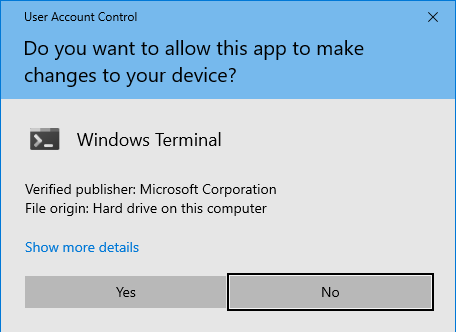
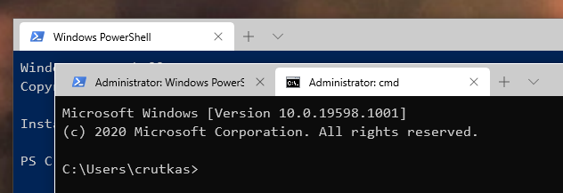

PowerToys running with administrator permissions
PowerToys administrator mode is required when you need PowerToys utilities to work with elevated applications on Windows. When running any application as an administrator (also referred to as elevated permissions), PowerToys may not work correctly when the elevated applications are in focus or trying to interact with a PowerToys feature like FancyZones. This can be addressed by also running PowerToys as administrator.
Options
There are two options for PowerToys to support applications running as administrator (with elevated permissions):
- Recommended: PowerToys will display a notification when an elevated process is detected. Open PowerToys Settings. On the General tab, select Restart as administrator.
- Enable Always run as administrator in the PowerToys Settings.
Note
It's not recommended to always run an application as administrator unless absolutely necessary. Running apps as administrator may expose your system to security risks. One of our principles at Microsoft is to be secure by default. Read more about our Secure Future Initiative (SFI) here.
Support for admin mode with PowerToys
PowerToys needs elevated administrator permission when writing protected system settings or when interacting with other applications that are running in administrator mode. If those applications are in focus, PowerToys may not function unless it's elevated as well.
These are the two scenarios where PowerToys will not work:
- Intercepting certain types of keyboard strokes
- Resizing / moving windows
Affected PowerToys utilities
Admin mode permissions may be required in the following scenarios:
- Always On Top
- Pin windows that are elevated
- FancyZones
- Snapping an elevated window (e.g. Task Manager) into a Fancy Zone
- Moving the elevated window to a different zone
- File Locksmith
- End elevated processes
- Hosts file editor
- Keyboard remapper
- Key to key remapping
- Global level shortcuts remapping
- App-targeted shortcuts remapping
- Mouse without Borders
- Use Service
- PowerToys Run
- Use shortcut
- Registry Preview
- Write keys to the registry
- Shortcut guide
- Display shortcut
- Video Conference Mute
Note
Each PowerToys utility has information in its Settings page about whether it requires admin mode and when it's required.
Run as administrator: elevated processes explained
Windows applications run in User mode by default. To run an application in Administrative mode or as an elevated process means that app will run with additional access to the operating system. Most apps don't need to run with elevated permission. However, a common scenario for requiring administrator permission would be to run certain PowerShell commands or edit the registry.
The simplest way to run an app or program in administrative mode is to right-click the program and select Run as administrator. If the current user isn't an administrator, Windows will ask for the administrator username and password.
If you see this User Account Control prompt, the application is requesting administrator level elevated permission:

In the case of an elevated command line, typically the text "Administrator" will be included in the title bar.

Install PowerToys
This utility is part of the Microsoft PowerToys utilities for power users. It provides a set of useful utilities to tune and streamline your Windows experience for greater productivity. To install PowerToys, see Installing PowerToys.